Chapter 2: Decline of the Mughal State
Factionalism, the Jagirdari crisis and Nadir Shah's 1739 invasion produced the Mansabdars who built these States.
| Year | Paper | Topic | Answer |
|---|---|---|---|
| 2017 | Mains | Fragmented polity in mid-18th century | |
Governors turned Mughal provinces into States by taking over the Sword, the Purse and the Eyes, while keeping the emperor's name as a shield.
Read it like a film first. Then go to the notes: every fact below is expanded there.
Story spine: The emperor's own governors took his Sword, Purse and Eyes into one hand through a five-step recipe, yet kept his name on top, so Bengal, Awadh and Hyderabad became real States on paper still Mughal. That gap between paper and power is what the EIC stepped into.
| Character | Role in the story | Hook |
|---|---|---|
| Akbar 56-05 | Designed the Mansabdari checks and balances | The Architect |
| Murshid Quli Khan (MQK 17-27) | Founder of Bengal; Nazim in 1717 while already Diwan | Two Hats |
| Sadat Khan 22-39 | Founder of Awadh; urged Nadir Shah to invade Delhi in 1739 | Sad at Delhi |
| Nizam-ul-Mulk 24-48 | Founder of Hyderabad (Chin Qulich Khan, Asaf Jah I) | The Nizam |
| Alivardi Khan 40-56 | Bengal's coup-maker of 1740; settled with Raghuji in 1751 | The Usurper |
| The Jagat Seths | Hereditary banking title: Manikchand, Mehtab Rai, Swarup Chand | The Bankers |
| Raghuji Bhonsle | Raided Bengal 1745-51; won Chauth and Orissa | The Raider |
| Safdar Jung 39-54 | Awadh's Wazir who annexed Farukhabad; resigned 1753 | The Overreacher |
| Shuja-ud-Daula 54-75 | Awadh's Wazir; Panipat 1761, Buxar 1764 | The Loser |
| Saadatullah Khan | Carnatic Nawab 1710-32; hereditary post, capital to Arcot | The Shifter |
| Anwar-ud-din Khan | Carnatic Nawab from 1744, chosen by the Nizam | The Nizam's Pick |
| Mir Jafar 57-60 | EIC-installed puppet after Plassey 1757 | The Puppet |
| Key term | In plain words |
|---|---|
| Successor State | A State carved out by a powerful Mansabdar who extracted governing authority over a Subah from the emperor |
| De facto / de jure | On ground reality / on paper |
| Subahdar (Nazim, Nawab) | The provincial governor; Nizamat is defence, peace and criminal justice (the Sword) |
| Diwan | Provincial head of Diwani: land revenue and civil justice (the Purse); reported to the Imperial Diwan, bypassing the Nazim |
| Bakshi of the Subah | Military audit and intelligence; reported to the Mir Bakshi, bypassing the Nazim |
| Wazir / Mir Bakshi | PM or Imperial Diwan / War Paymaster, the two prized Mansabs at the Centre |
| Naib | Deputy (Naib Nazim = Deputy Subahdar) |
| Tankha Jagir / Vatan Jagir | Temporary, transferable Jagir / hereditary Jagir |
| Ijaradar | A revenue-farmer, one of the men of money given Mansabs |
| Jagat Seth | A hereditary title of a Bengal banking family, not a personal name |
| Chauth | One-fourth of revenues, won by Raghuji Bhonsle from Bengal and Bihar in 1751 |
| Hyderabad-Karnatic | The twelve districts south of the Krishna, with their own Nawab reporting to the Nizam |
Remember it as Governors became rulers by taking the Sword, the Purse and the Eyes in one hand, while the emperor's name stayed on top as a shield.
| Year and paper | What was asked | The answer or trap | Where in this chapter |
|---|---|---|---|
| Prelims 2021 | The relation between the Carnatic and Hyderabad | Do not treat the Carnatic as a separate independent State. It was the southern part of the Hyderabad Subah | The Carnatic inside Hyderabad |
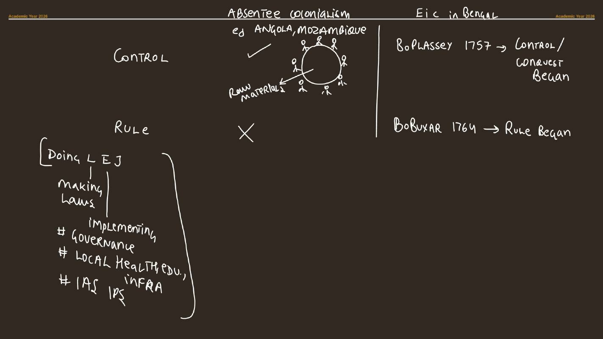
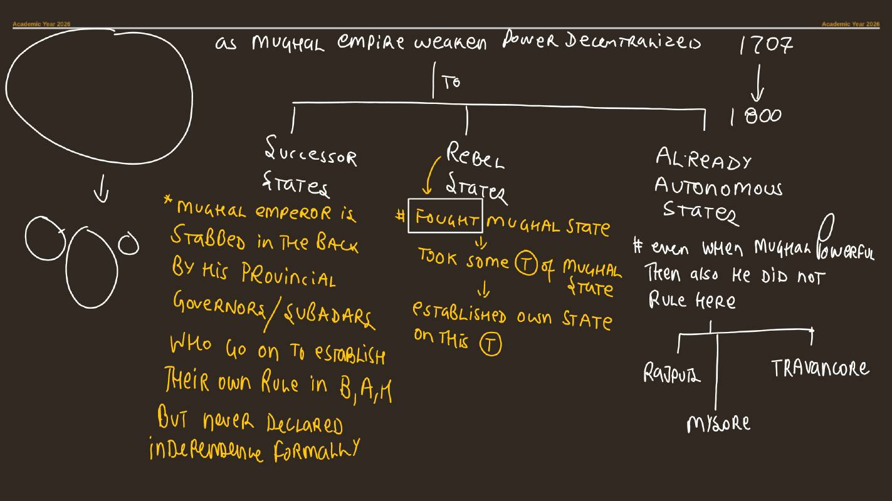
| Class | Examples | How they arose |
|---|---|---|
| Successor States | Bengal, Awadh, Hyderabad | Powerful Mansabdars who extracted governing authority over a Subah from the emperor (this chapter) |
| Rebel States | Marathas, Sikhs, Jats, Afghans (Farukhabad, Rohilkhand) | Formed by those who openly rebelled against the empire |
| Already Autonomous | Rajputs, Mysore, Travancore | Never under effective Mughal control to begin with |
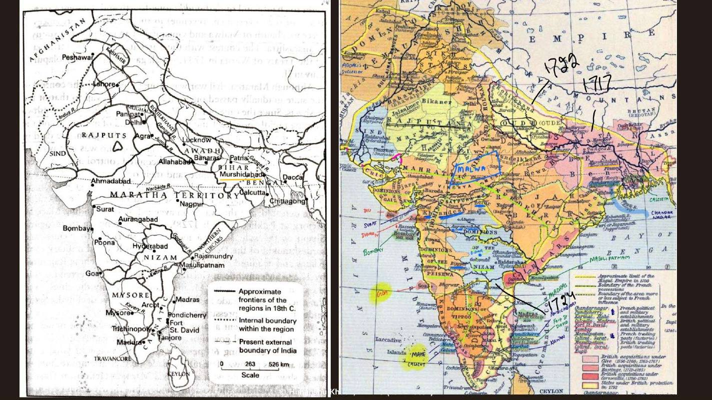
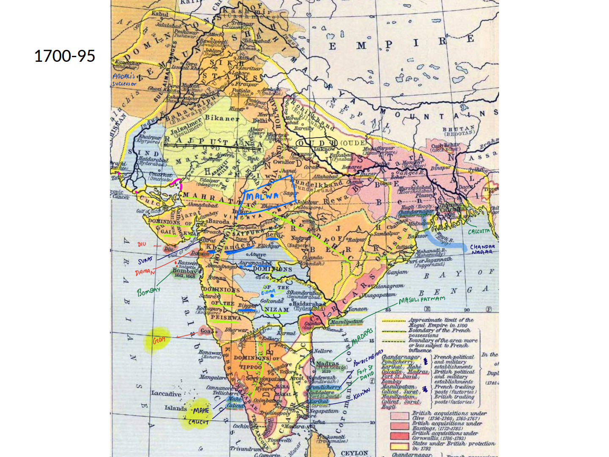
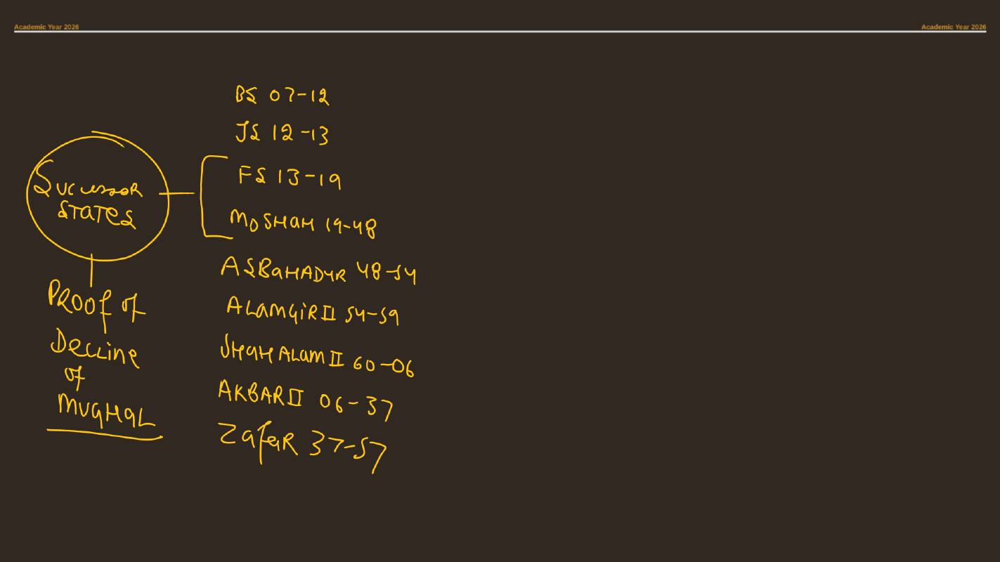
| Emperor | Reign |
|---|---|
| Bahadur Shah | 1707–12 |
| Jahandar Shah 12-13 | 1712–13 |
| Farukhsiyar | 1713–19 |
| Muhammad Shah 19-48 (Rangila) | 1719–48 |
| Ahmad Shah Bahadur | 1748–54 |
| Alamgir II 54-59 | 1754–59 |
| Shah Alam II 60-06 | 1760–1806 |
| Akbar II 06-37 | 1806–37 |
| Bahadur Shah Zafar 37-57 | 1837–57 |
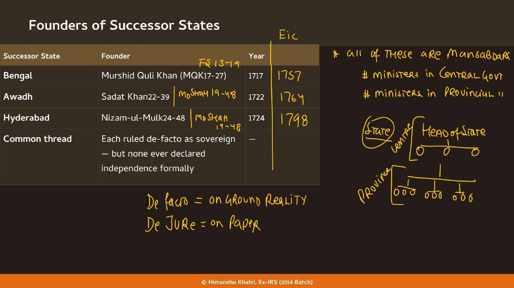
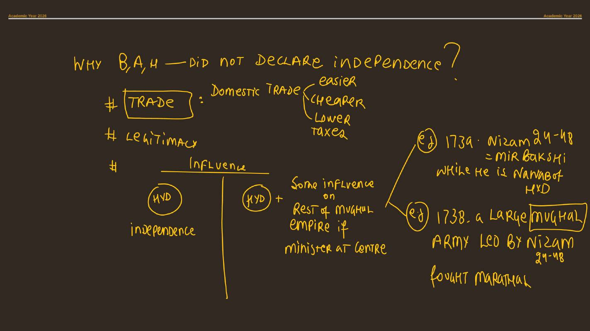
| Reason | Detail | Teacher's ink |
|---|---|---|
| Symbolic legitimacy (Social power) | A Mughal Subahdar's title commanded the obedience of local nobles | If you declare independence, opponents may unite against you in the name of the emperor |
| Ambitions at Delhi (Political power) | Prized Mansabs at the Centre: Wazir (PM / Imperial Diwan) and Mir Bakshi (War Paymaster). Nizam-ul-Mulk 24-48 was Wazir 1722–24 while also Subahdar of Hyderabad, and became Mir Bakshi in 1739–40 while still Subahdar of Hyderabad | Independent Hyderabad has no influence; Hyderabad with a minister at the Centre has some influence on the rest of the Mughal empire |
| Military assistance (Military power) | Provinces could rely on each other's help in times of war | If independent, an attack on Hyderabad is no longer an attack on the Mughal empire, so the help is gone |
| Trade barriers (Economic power) | Political independence could hurt trade, because tariffs may then apply. (Think EU members giving up partial sovereignty for open borders and trade.) | Domestic trade is easier, cheaper, lower taxes |
| Office | Role | Reports to |
|---|---|---|
| Subahdar (Nazim / Nawab) | Nizamat: defence, peace, criminal justice (the Sword) | the Emperor |
| Diwan | Diwani: land revenue and civil justice (the Purse) | the Imperial Diwan (Wazir), bypassing the Nazim |
| Bakshi of the Subah | Military audit and intelligence | the Mir Bakshi at the Centre, bypassing the Nazim |
| The design (Akbar 56-05 | Checks and balances. Every successor State's founder dismantled it | none |
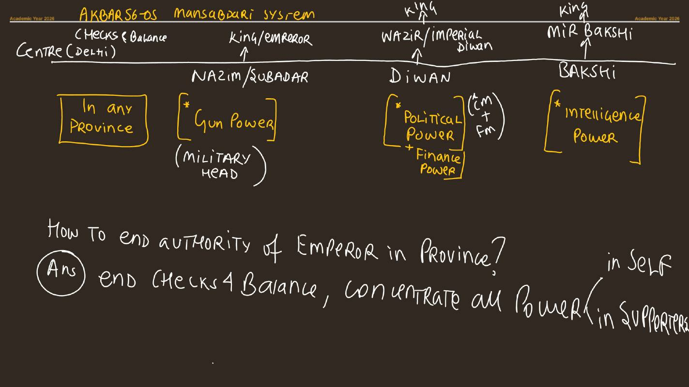
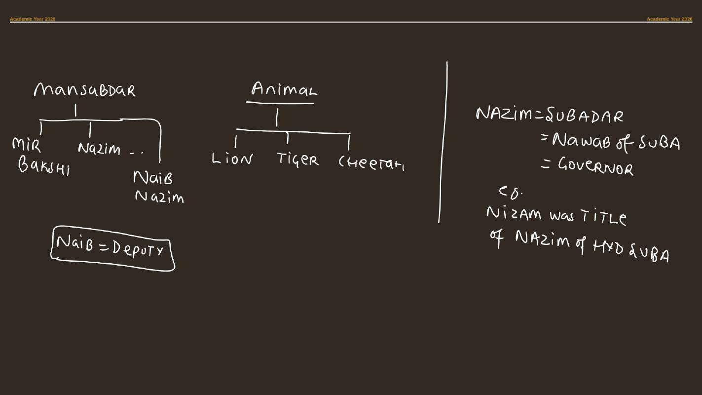
| Branch | Function | Regional level (Patna, Cuttack, Dacca) | Provincial level (Murshidabad) | Imperial level (Delhi) |
|---|---|---|---|---|
| Nizamat | Home Minister (law and order, criminal justice) plus defence (war commander) | Naib Nazim | Nazim (Subahdar) | Emperor (direct reporting; no intermediate minister) |
| Diwani | Revenue, civil administration, civil justice | Naib Diwan | Diwan | Wazir-i-Mumalik / Imperial Diwan (Diwan-i-Ala), then the Emperor |
| Bakshi (parallel audit and intelligence line) | Mansabdari records, military payroll, anti-corruption inspection (dagh and chehra), intelligence (waqia-navis) | Subordinate Bakshis (attached to Faujdars and contingents) | Bakshi of Bengal Subah | Mir Bakshi (Bakhshi-ul-Mumalik), then the Emperor |
| Region within Suba | Headquarters | Nizamat head | Diwani head | Status |
|---|---|---|---|---|
| West Bengal | Murshidabad | Nazim | Diwan | Direct rule |
| Bihar | Patna | Naib Nazim | Naib Diwan (reports to Murshidabad) | Delegated rule |
| Orissa | Cuttack | Naib Nazim | Naib Diwan (reports to Murshidabad) | Delegated rule |
| East Bengal | Dacca | Naib Nazim | Naib Diwan (reports to Murshidabad) | Delegated rule |
| # | Function | What it meant |
|---|---|---|
| 1 | Mansabdari records | Who holds what rank, who got promoted, demoted, joined or died; registers updated constantly |
| 2 | Military payroll | Calculating each Mansabdar's entitlement, assigning him a Jagir of the right value, transferring Jagirs every 2-3 years to prevent local roots, and in wartime controlling war expenditure |
| 3 | Anti-corruption inspection | Two mechanisms by Akbar 56-05: Dagh ("branding": every horse branded with an imperial mark on its flank; at inspection only branded horses counted) and Chehra ("face": each soldier's face, height, complexion and marks recorded in a register) |
| 4 | Intelligence (waqia-navis) | Information collectors in every province, district and significant town, sending daily reports to Delhi: court intrigues, market prices, harvest conditions, military movements, suspicious behaviour by the Nazim or Diwan, rebellions brewing, foreign travellers arriving. Reports flowed up through the Bakshi system, the Mir Bakshi being the chief recipient |
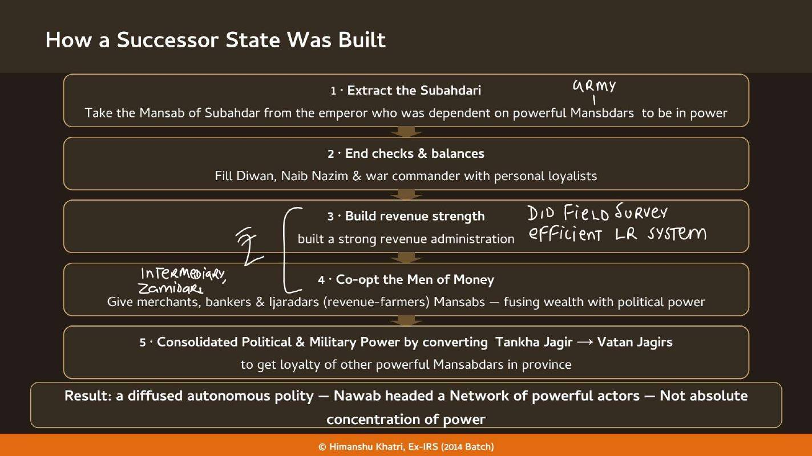
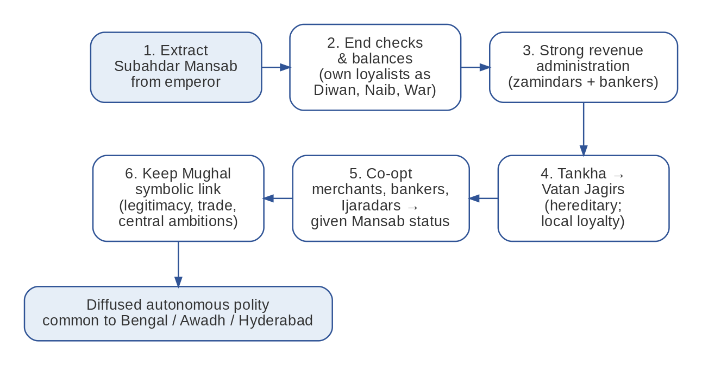
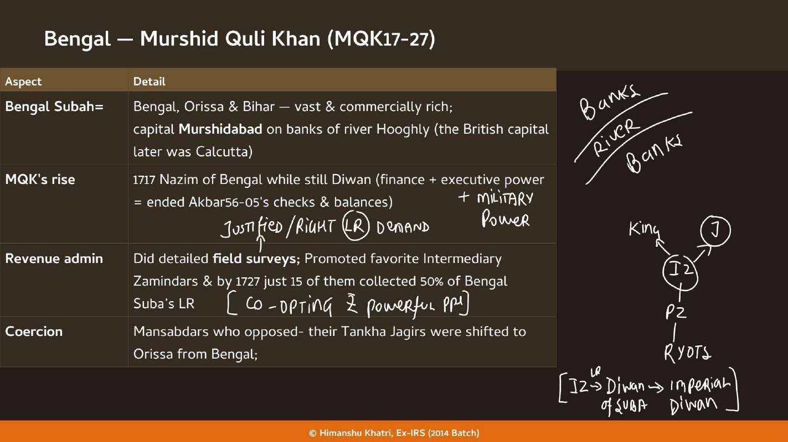
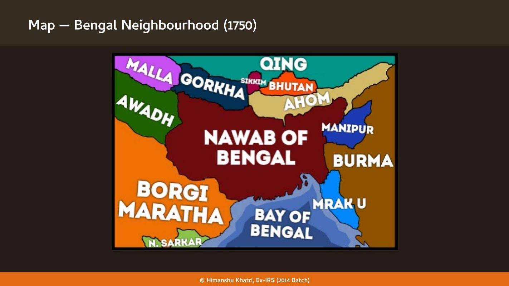
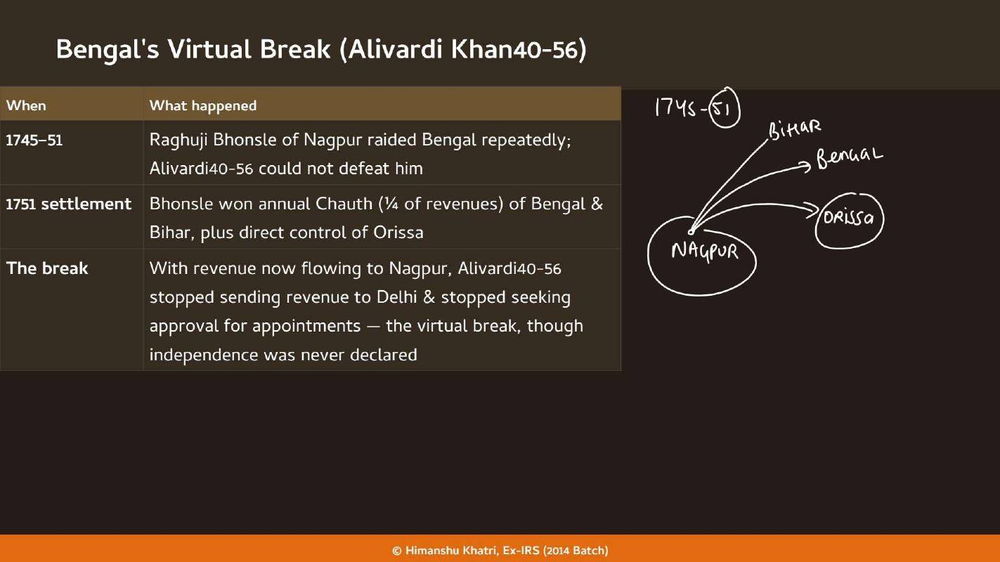
| Aspect | Detail |
|---|---|
| Symbolic sovereignty (by 1748) | The emperor's name on coins and in the Friday Khutba, but zero influence over war, peace, treaties or appointments |
| Tolerance | The Hindu majority was economically powerful, so Nizam followed religious tolerance and punished opponents regardless of community |
| Most aggressive change | Of the three States, Hyderabad converted Tankha to Vatan Jagirs most aggressively and made merchants, moneylenders and Ijaradars Mansabdars ("upstarts") on the largest scale |
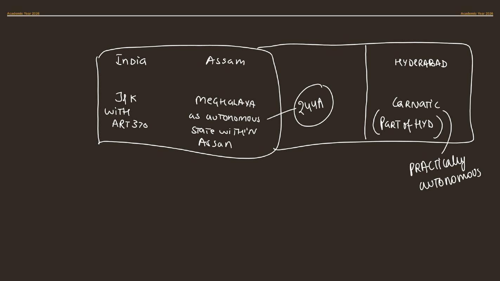
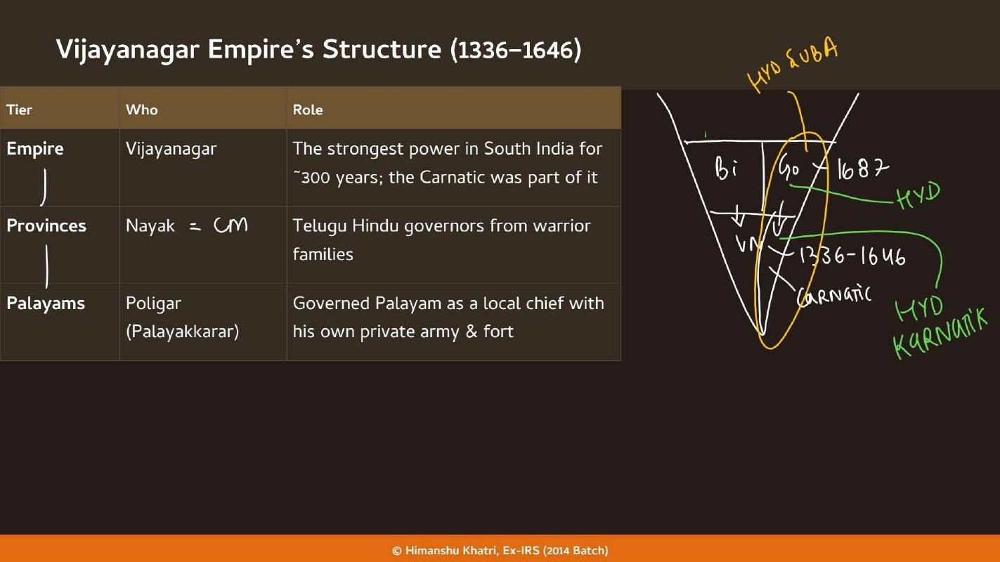
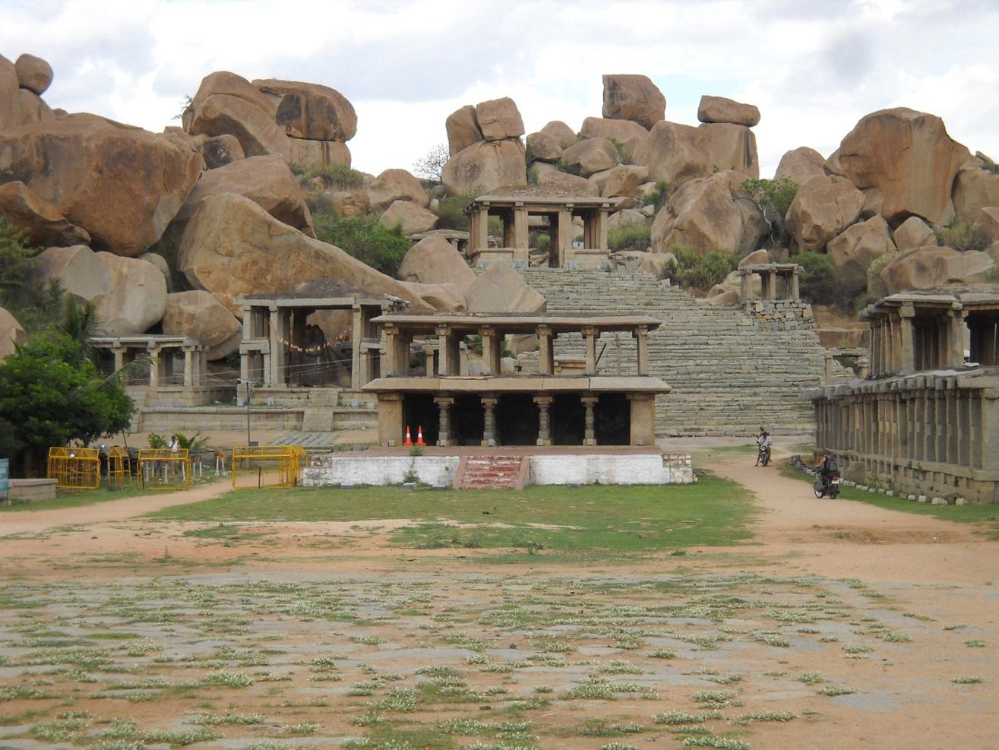
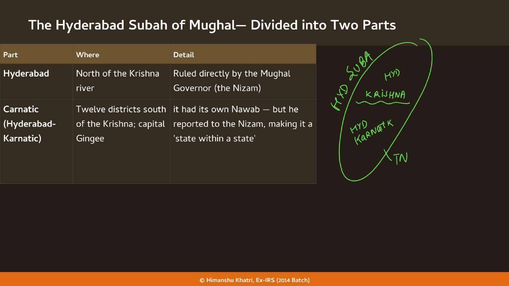
| Part | Where | Detail |
|---|---|---|
| Hyderabad | North of the Krishna river | Ruled directly by the Mughal Governor (the Nizam) |
| Carnatic (Hyderabad-Karnatic) | Twelve districts south of the Krishna; capital Gingee (covered the old Nayak kingdoms of Gingee, Tanjore and Madurai; on 18th-century maps, simply the "Carnatic") | Had its own Nawab, but he reported to the Nizam: a "state within a state" |
| Nawab | What happened |
|---|---|
| Saadatullah Khan (1710–32) | The last Nawab directly chosen by the Mughal Emperor (1710). Two big steps: he moved the capital from Gingee to Arcot and made the Nawab post hereditary in his family without asking the emperor. He was childless and adopted his brother Ghulam Ali's son, Dost Ali. In name the Carnatic was still under the Nizam |
| Dost Ali Khan (1732–40) | His adopted nephew. Killed in 1740 by the Marathas under Raghuji Bhonsle in the Chittoor district of Andhra Pradesh, close to the Tamil Nadu border |
| Anwar-ud-din Khan (from 1744) | Chosen by the Nizam, ending Saadatullah Khan's dynastic rule. But he too emerged autonomous of the Nizam |
| Point | Detail |
|---|---|
| Concentration of power | Across Bengal, Awadh and Hyderabad (and the Carnatic): a powerful Mansabdar extracts the Subahdari, dismantles checks and balances, builds revenue strength, converts Tankha to Vatan, and co-opts merchants and bankers into the Mansabdari system |
| No independence | None declared it: the Mughal umbrella served their interests; practically independent, including decisions of war and peace. Each developed its own diplomacy, army and fisc |
| Unique Carnatic | Part of the Hyderabad Suba but autonomous: a successor State inside a successor State. Fragmentation was not only horizontal (Subahs breaking from the empire) but also vertical (sub-regions within a successor State developing their own semi-autonomous identity) |
| Mughal authority | The emperor became a constitutional monarch with no executive power: a ceremonial head of State whose legitimacy was still useful to others |
| Bengal | Awadh | Hyderabad | |
|---|---|---|---|
| Founder and year | Murshid Quli Khan, 1717 | Sadat Khan 22-39, 1722 | Nizam-ul-Mulk 24-48 (Asaf Jah I), 1724 |
| Founder's reign | 1717–27 | 1722–39 | 1724–48 |
| Earlier post | Diwan (from 1700) | Subahdar as reward for crushing revolts | Leader of the Turani group; Wazir 1722–24 |
| Key feature | Field surveys; 15 Zamindars collected 50% of LR; Jagat Seths as bankers | New loyal elite of Indian Muslims, Afghans and Hindus; kept ambitions at the centre | Most aggressive Tankha to Vatan; merchants and moneylenders as Mansabdars; Carnatic inside |
| Link to Nadir Shah 1739 | - | Sadat Khan 22-39 urged the attack on Delhi | Nizam as Mir Bakshi bought Nadir off with Rs 50 lakh (attempt) |
| Virtual break | Alivardi Khan 40-56, after 1751 settlement with Raghuji Bhonsle | 1753, Safdar Jung 39-54 forced to resign | After 1740, Nizam moves to Hyderabad for good |
| EIC link | Plassey 1757; Diwani 1765 | Buxar 1764; annexed 1856 | Succession: French-dominated under Bussy (Salabat Jung 51-62) |
| Year | What happened |
|---|---|
| 1717 | MQK becomes Nazim of Bengal (already Diwan) ★ |
| 1727 | MQK dies; by now 15 Zamindars collect 50% of Bengal LR; Shuja-ud-din Md Khan (1727-39) |
| 1739 | Sarfaraz Khan (1739-40) |
| 1740 | Alivardi Khan 40-56's coup with Jagat Seth's backing ★ |
| 1745 | Raghuji Bhonsle's raids begin (to 1751) |
| 1751 | Settlement: Chauth of Bengal and Bihar, Orissa to Bhonsle ★ |
| 1756 | Siraj-ud-Daula 56-57 |
| 1757 | Battle of Plassey; Mir Jafar 57-60 EIC puppet ★ |
| 1760 | Mir Qasim 60-63 |
| 1763 | Mir Jafar 57-60 restored (1763-65) |
| 1765 | Bengal's Diwani passes to the EIC ★ |
Factionalism, the Jagirdari crisis and Nadir Shah's 1739 invasion produced the Mansabdars who built these States.
Raghuji Bhonsle's raids on Bengal (1745-51) and the Chauth of 1751; Marathas defeated Nizam in 1728 and 1738.
The Rebel States (Jats; Afghans of Farukhabad and Rohilkhand) are the second class; Safdar Jung 39-54 annexed Farukhabad into Awadh.
Rajputs, Mysore and Travancore are the third class.
Akbar 56-05's Mansabdari, Tankha and Watan Jagirs and the Diwan and Bakshi checks are what the founders of these States rebuilt.
The Carnatic succession (Anwar-ud-din 1749, the Carnatic Wars) draws the French and British into South India.
Read the question, answer in your head, then tap to check.
| Three classes of regional States? | Successor (Bengal, Awadh, Hyderabad), Rebel (Marathas, Sikhs, Jats, Afghans), Already Autonomous (Rajputs, Mysore, Travancore). |
| De facto vs de jure? | De facto = on-ground reality; de jure = on paper. |
| Control vs rule (teacher)? | Control can exist without rule (absentee colonialism); rule = doing L, E, J and governance. EIC: Plassey 1757 = control began; Buxar 1764 = rule began. |
| Four reasons the founders never declared independence? | Symbolic legitimacy, ambitions at Delhi, military assistance, trade barriers. |
| What would independence cost Hyderabad (teacher)? | Opponents could unite in the name of the emperor, and an attack on Hyderabad would no longer be an attack on the Mughal empire. |
| Which posts did Nizam-ul-Mulk 24-48 hold at Delhi? | Wazir (1722-24) and Mir Bakshi (1739-40), while being Subahdar of Hyderabad. |
| Nizamat vs Diwani? | Nizamat = defence, peace, criminal justice (Sword); Diwani = land revenue and civil justice (Purse). |
| Who did the Diwan report to? | The Imperial Diwan (Wazir) at Delhi, bypassing the Nazim. |
| Teacher's comparison of Nazim, Diwan and Bakshi? | Gun power; political plus finance power (CM plus FM); intelligence power. |
| How to end the emperor's authority in a province (teacher)? | End checks and balances; concentrate all power in yourself or your supporters. |
| Nazim, Subadar, Nawab, Governor? | The same Mansab (teacher). Naib = Deputy. "Nizam" was the title of the Nazim of Hyderabad Suba. |
| Nawab of Patna? | A Nawab can run a sub-region: Alivardi was Nawab of Patna / Naib Nazim of Bihar before 1740. |
| Dagh vs chehra? | Dagh = branding horses; chehra = registering the soldier's face and description. |
| What were waqia-navis? | Information collectors who sent daily reports to Delhi via the Bakshi system. |
| Why was the Bakshi the second-highest official? | He knew who the nobles were, what they were paid, whether they were honest and what they were doing. |
| Steps of the recipe? | Extract Subahdari; end checks and balances; build revenue strength; co-opt men of money; convert Tankha to Vatan. |
| What is a Vatan Jagir here? | A hereditary Jagir; the emperor's tool of shifting Jagirs was traded for local loyalty. |
| What was structurally new about giving Mansabs to merchants? | The system was lineage-based; administrative rank and commercial wealth were now merged. |
| Why did MQK's Bengal flourish? | Field surveys, intermediary Zamindars (15 collected 50 percent of LR by 1727), and the Jagat Seths. |
| Which Jagat Seths served under which Nawab? | Manikchand under MQK; Mehtab Rai and Swarup Chand under Alivardi. |
| Proof that Bengal's power was diffused? | The 1740 coup: Alivardi toppled Sarfaraz Khan with the Jagat Seth's backing and bought the emperor's approval. |
| What happened in 1751 in Bengal? | Settlement with Raghuji Bhonsle: Chauth of Bengal and Bihar plus Orissa; Alivardi stopped sending revenue to Delhi. |
| Bengal's last nawabs after Alivardi (in order)? | Siraj-ud-Daula 56-57, Mir Jafar 57-60, Mir Qasim 60-63, Mir Jafar 57-60; Diwani to the EIC in 1765. |
| How did Sadat Khan 22-39 bring about Nadir Shah's attack on Delhi? | He was snubbed when the Mir Bakshi post went to Nizam, so he convinced Nadir Shah to attack. |
| Awadh's virtual break? | 1753, when Safdar Jung 39-54 was forced to resign as Wazir after annexing Farukhabad. |
| Shuja-ud-Daula 54-75's battles? | Third Panipat 1761 (with Abdali) and Buxar 1764 (lost to the EIC). |
| When was Awadh annexed? | 1856, from Nawab Wajid Ali Shah. |
| Whom did Nizam-ul-Mulk 24-48 defeat to take Hyderabad? | Mubariz Khan, the Nazim of the Deccan. |
| Nizam's setbacks vs the Marathas? | Defeated in 1728 and 1738; forced to pay Chauth and Sardeshmukhi. |
| Hyderabad succession after the first Nizam? | Nazir Jung, Muzaffar Jung 50-51, Salabat Jung 51-62 (French-dominated under Bussy), Nizam-Ali-Khan. |
| Why was Hyderabad tolerant? | The Hindu majority was economically powerful. |
| What is the Carnatic? | The southern part of the Hyderabad Subah: twelve districts south of the Krishna, capital Gingee, with its own Nawab who reported to the Nizam. |
| Teacher's parallels for a State within a State? | J&K with Art. 370; Meghalaya as an autonomous State within Assam (Art. 244A). |
| Vijayanagar structure? | Empire (1336-1646), Nayaks (Telugu Hindu governors), Palayams under Poligars with private armies and forts. |
| Who destroyed Vijayanagar in 1565 and where? | The four-state Deccan Sultanate alliance (Bijapur, Ahmadnagar, Golconda, Bidar) at Talikota. |
| Gingee timeline? | Shivaji 74-80 captured it in 1677; Rajaram 89-00 based there from 1689; Zulfiqar Khan besieged from 1690; the Mughals took it in 1698 after eight years. |
| What did Saadatullah Khan do for autonomy? | Moved the capital from Gingee to Arcot and made the Nawab post hereditary by adopting Dost Ali. |
| How did Dost Ali die? | Killed in 1740 by the Marathas under Raghuji Bhonsle in Chittoor district. |
| Who ended Saadatullah's dynasty? | The Nizam, by choosing Anwar-ud-din Khan in 1744. |
| What did the emperor become? | A constitutional monarch with no executive power. |
| What made the subcontinent vulnerable to outsiders? | Legitimacy and real power had come apart. |
Tap the card to flip.